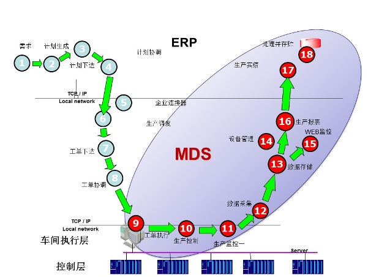

MDS平台简介
MDS(汉顺制造数据系统)是上海汉顺整合HMES产品及相关项目经验的一个基本平台，基于 HMES产品在数十条生产线的成功应用，我们重新设计了系统的逻辑架构，使系统层次和逻辑实现更加合理 ，并且将各种设备的驱动标准化，使产品的通用性、稳定性、可配置性得到极大的提高 。
MDS产品主要面向制造型企业，整合条形码、二维码、RFID等，通过多种技术手段获取车间生产数据，并在数据采集、数据存储、数据挖掘、数据展现等方面建立统一标准。MDS为企业提供了一个基础的数据平台，在此基础上，诸如产品追溯、工艺控制、智能防错、设备动态管理等多种应用可以快速开发、快速部署，保护企业投资。
如今，MDS已经成功应用到众多大中型外企、国企汽配制造工厂之中，同时还在以燎原之势为全球更多制造企业提供最专业的产品和服务。
